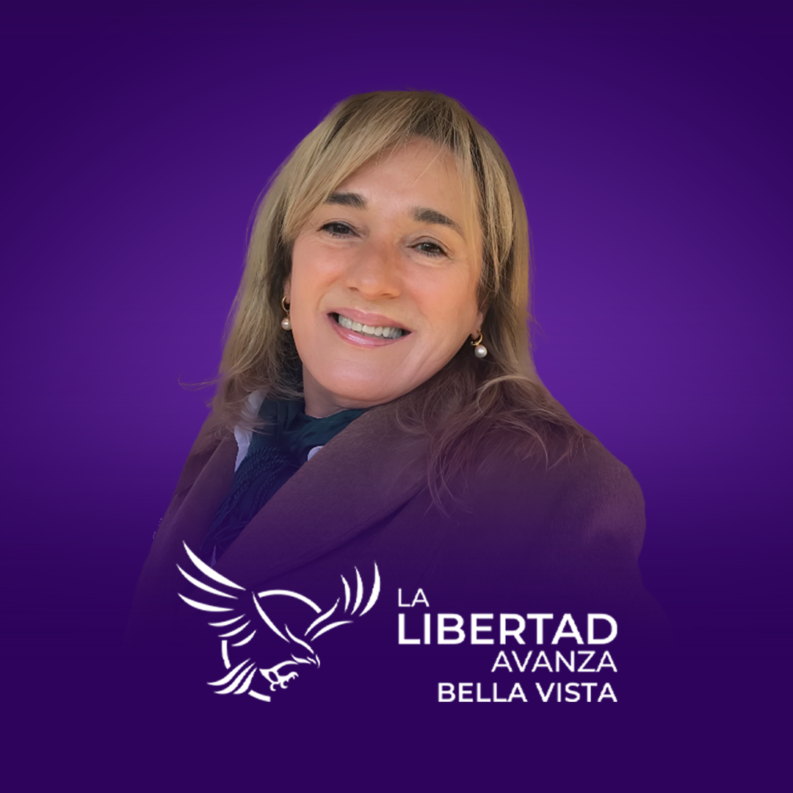

La Libertad Avanza Bella Vista
Nuestras Propuestas
Seguridad y Tránsito
- Implementación del DTS con GPS para monitoreo de recorridos
- Ampliación del sistema de videovigilancia en zonas críticas
- Tolerancia cero al vandalismo con multas por daños a bienes públicos
- Actualización del sistema de licencias (renovación cada 5 años)
Infraestructura y Servicios
- Extensión de red de agua potable en barrios sin servicio
- Modernización de alumbrado público municipal
- Ampliación de red cloacal priorizando salud pública
- Mejora del sistema de recolección de residuos
- Integración de servicios públicos en un solo complejo
- Mejoramiento de avenida San Martín
- Asfaltado y bacheo en barrios prioritarios
- Mejoramiento de veredas y paseos peatonales
- Programa de arborización con sanciones por tala no autorizada
Salud
- Refuerzo del trabajo conjunto municipio-provincia en hospital local
- Revisión del esquema de remuneraciones del personal de salud
- Fortalecimiento de CAPS y SAPS con ampliación horaria
Recursos Humanos
- Programa continuo de capacitaciones para personal municipal
- Sistema de concursos públicos con exámenes de aptitud
Transporte
- Nueva licitación del servicio de transporte público urbano
- Revisión de subsidios y ampliación de recorridos
Producción
- Programa de acompañamiento a emprendedores con ideas de alto potencial
- Financiamiento con baja tasa de interés para proyectos seleccionados
Turismo y Deporte
- Reestructuración y ampliación de playa municipal
- Remodelación de calle Florida para integración turística
- Recuperación de accesos a zona costera norte
- Instalación de baños públicos en zonas de recreación
- Incentivo al deporte y explotación del río Paraná
- Colaboración para mejoras estructurales en clubes locales
- Promoción de deportes acuáticos en el río
- Ampliación del Concurso Pesca Variada a nivel nacional
Desarrollo Económico
- Eliminación de trabas burocráticas para inversiones
- Régimen de exención/reducción de impuestos para industrias
- Auditoría de gastos municipales para detectar malversaciones
- Reorganización presupuestaria priorizando áreas clave
- Reducción progresiva de impuestos municipales
Desarrollo Social
- Adjudicación transparente por sorteo de 20 casas
- Colaboración para traslados médicos a Corrientes
- Asistencia a familias afectadas por eventos climáticos
- Plan materno infantil para madres en periodo de lactancia
Educación y Cultura
- Programa de Becas al Mérito para estudiantes secundarios
- Mejora de biblioteca municipal y condiciones del personal
- Formación en drones, inteligencia artificial y nuevas tecnologías
- Aumento de material didáctico y libros
- Creación de café literario
- Guías de instituciones terciarias disponibles
- Fomento de olimpiadas en Bella Vista
- Reacondicionamiento del museo municipal
Nuestro Equipo
Mauricio José
Silanes Guido
Soy veterinario, especializado en animales de campo, y vengo del trabajo rural. Sé lo que es producir, invertir tiempo y esfuerzo, sin depender del Estado. Por eso decidí involucrarme: quiero un municipio que acompañe, no que ponga trabas. Vengo a gestionar con sentido común, honestidad y respeto por el que trabaja.
Volver
Gabriela
Correa
Toda mi vida trabajé en el sector privado. Fui comerciante en el rubro de la estética y conozco de primera mano lo difícil que es sostener un emprendimiento con tantas trabas e impuestos. No vengo de la política, vengo del esfuerzo cotidiano. Quiero un municipio que deje de asfixiar a los que producen y que empiece a estar del lado de quienes generan trabajo.
VolverMarcelo
Zalazar Geschwind
Soy Ingeniero Agrónomo y toda mi vida estuvo ligada al campo, al trabajo rural y a la producción. No vengo de una estructura política, vengo de la tierra y del sacrificio que implica sostener el interior productivo. Me involucré porque estoy convencido de que necesitamos una gestión que defienda al que trabaja y apuesta al desarrollo de verdad.
VolverMalena Abril
Cardozo
Desde los 18 años me dedico a la docencia en el ámbito privado. Este año abrí mi propio instituto porque creo en el mérito, la libertad y la responsabilidad individual. No vengo de la política: soy parte de una generación que quiere crecer, que no espera que le regalen nada y que está cansada de ver cómo se administra mal lo público. Me sumé para aportar desde el compromiso y las ideas.
VolverFabian Ernesto
Galarza
Me formé en el ámbito alimenticio y productivo. Me especialicé como auditor en normas ISO, tanto en la gestión pública como privada. No vengo de la política, vengo del trabajo técnico, de controlar procesos y de ver dónde se desperdician recursos. Me sumé porque creo en una gestión eficiente, con controles reales, sin acomodos y con responsabilidad en cada peso que se gasta.
VolverAmorina Ayelen
Nuñez
Estudio para ser docente, tengo mi propio emprendimiento y hace años me dedico a cuidar animales en situación de abandono. No vengo a repetir discursos ni a subirme a ningún sillón: vengo de andar las calles, de meterme donde nadie va, de ayudar con lo que tengo. Me sumé porque creo que la política necesita menos excusas y más gente de a pie, con ganas reales de cambiar lo que está mal, desde adentro y sin doble discurso.
VolverMartin Guillermo
Buloz
Soy médico, con orientación quirúrgica y urológica. Hoy trabajo en el hospital de nuestra ciudad, y veo todos los días cómo el personal de salud deja todo, a pesar del abandono de años. No soy político, vengo del trabajo silencioso, del esfuerzo diario en el sistema de salud. Estoy convencido de que desde el municipio podemos mejorar la organización, el trato y la atención, sin promesas vacías.
VolverEve Dahiana
Romero
Enfermera profesional con vocación de servicio comunitario.
Formación: Lic. en Enfermería (UNNE)
Experiencia: Supervisora Hospital Local


Contacto
¡Javier Milei y Lisandro Almirón te necesitan!